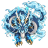

Kishinryuu
The storm dragon of the Kazeraikou clan, summoned for one fight. Lightning falls on enemies around it, and it fights with its own lightning and water techniques: Storm Breath, Water Dragon Bullet, Great Tidal Wave, Thunder Rain and Storm Torrent. It uses them by itself, or you can aim them while it is drafted. It goes back into the storm when its time is up.